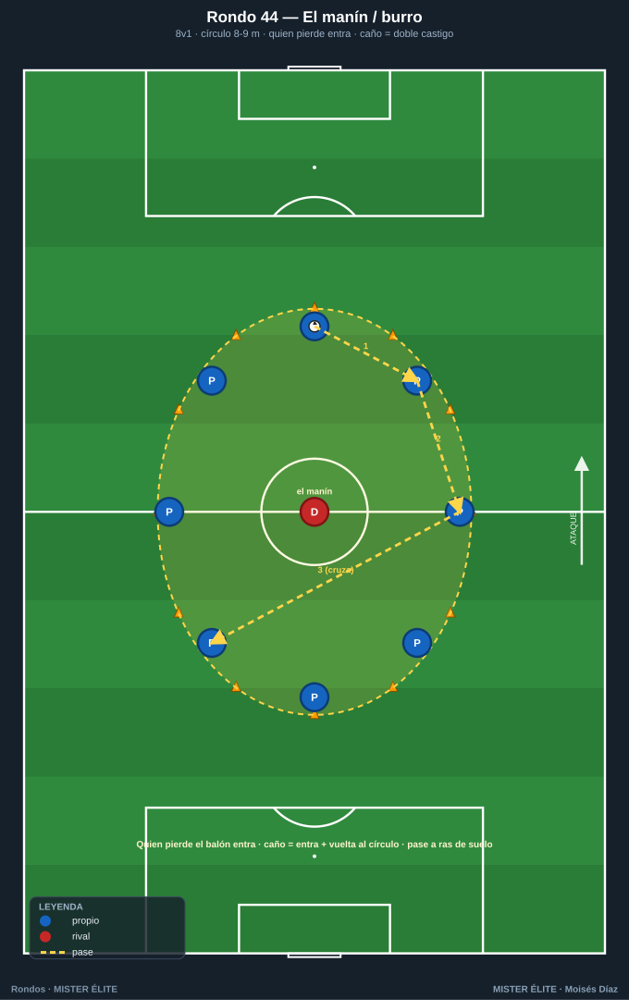
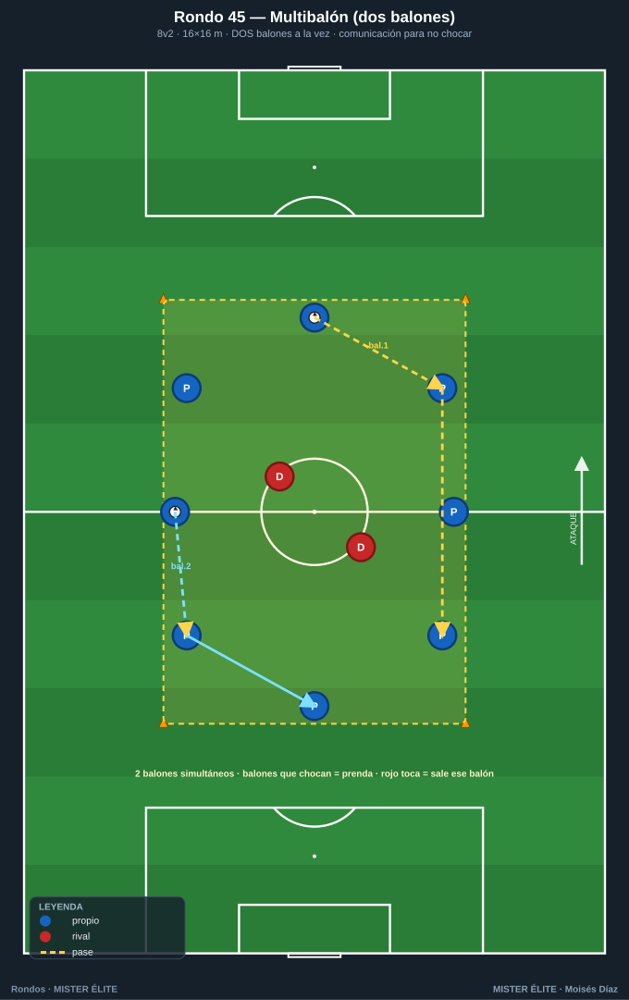
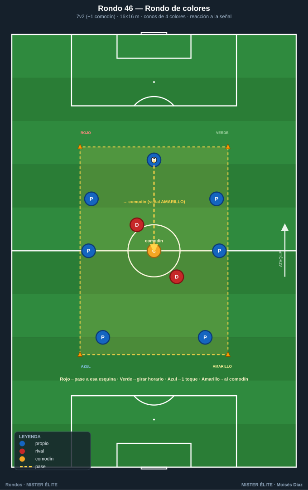
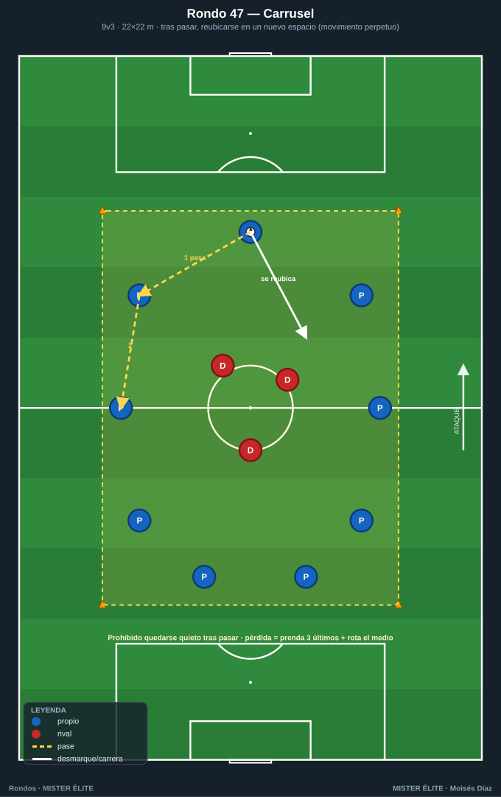
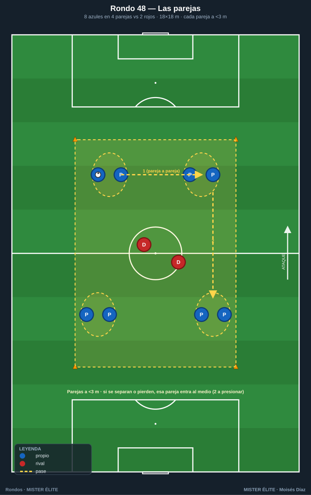
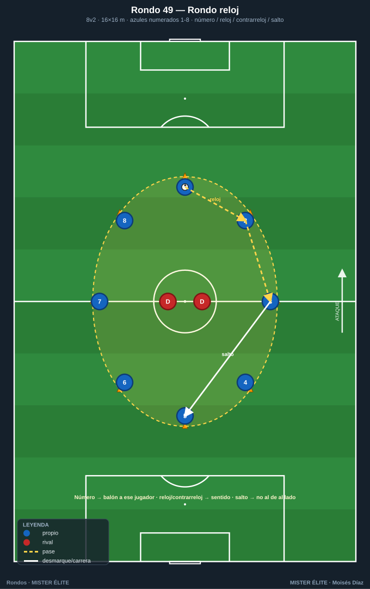
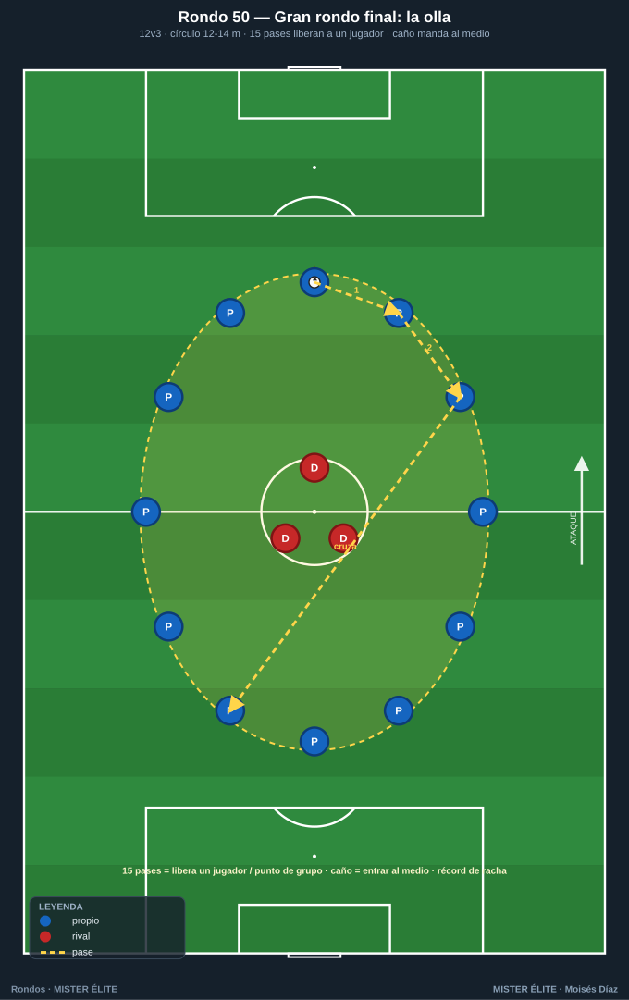

Familia 7 · Lúdicos y de calentamiento (Rondos 44–50)
Activación neuromuscular, ritmo, técnica bajo fatiga ligera, cohesión. Preparan el cuerpo y el "ojo" para la sesión o el partido.
Notación: poseedores = azules, defensores = rojos, comodines = ámbar. Espacio con conos; flechas según
README.
Rondo 44 — "El manín / burro clásico con castigo activado"
Objetivo - Socioemocional/técnico: activación técnica, ambiente competitivo de grupo y castigo que mantiene la concentración; calentamiento divertido con foco en el pase preciso.
Organización - Relación: 8 v 1 en círculo de 8–9 m de diámetro (un solo defensor, "el manín/burro"). - Material: 8 conos para el círculo, 1 balón, petos opcionales.

Desarrollo 1. Rondo clásico: 8 poseedores en círculo, 1 en el medio que intenta robar o tocar el balón. 2. Quien pierde el balón (mal pase, balón tocado, o "túnel" sufrido) pasa al medio. 3. Castigo: si el del medio hace un caño/túnel, el castigado entra y da una vuelta corriendo al círculo antes de incorporarse. Ideal como primer ejercicio de la sesión.
Provocaciones (medibles) - Quien pierde el balón entra al medio. - Caño = doble castigo (entra + vuelta al círculo). - Pase a ras de suelo obligatorio (nada de balones altos). - Récord: cuántos pases seguidos sin que entre nadie.
Variantes (fácil → difícil) - Fácil: 10 v 1, balón libre. - Medio: 8 v 1 a 2 toques. - Difícil: 6 v 2 a 1 toque, dos "burros" en el medio.
Coaching - Calidad del pase desde el primer minuto (no es solo juego); abrir ángulos para el compañero; el del medio aprende a cerrar líneas con el cuerpo.
Duración / series: 8–10 min de activación al inicio de sesión.
Rondo 45 — "Rondo multibalón (dos balones a la vez)"
Objetivo - Cognitivo-perceptivo: atención dividida y visión periférica; calentamiento con alta exigencia de escaneo.
Organización - Relación: 8 v 2 en cuadro de 16×16 m con DOS balones en juego simultáneamente. - Material: 8 conos, 2 balones, petos.

Desarrollo Rondo normal pero con dos balones circulando a la vez. Los 8 azules conservan ambos evitando que choquen o que los 2 rojos los toquen. Exige mirar antes de recibir y comunicar ("¡balón!", "¡voy!"). Si los rojos tocan un balón o dos balones se cruzan, prenda corta para los implicados y se reinicia.
Provocaciones (medibles) - 2 balones simultáneos siempre en juego. - Balones que chocan = prenda para los dos últimos pasadores. - Rojo toca un balón = ese balón sale, prenda al que lo perdió, se repone. - Reto: aguantar 60 s con los dos balones vivos sin incidencias.
Variantes (fácil → difícil) - Fácil: 1 balón y se añade el 2.º a mitad. - Medio: la descrita (2 balones, 2 rojos). - Difícil: 2 balones a 2 toques, o 3 balones con 9–10 azules.
Coaching - Cabeza arriba y comunicación verbal constante; no fijarse solo en "tu" balón; repartir la atención y anticipar dónde está el otro balón.
Duración / series: 8 min de calentamiento cognitivo, 3 mini-rondas con prenda.
Rondo 46 — "Rondo de colores (cognitivo por señal)"
Objetivo - Cognitivo-perceptivo: reacción a estímulos externos; asociar color/señal a una acción técnica mientras se conserva.
Organización - Relación: 7 v 2 (+1 comodín) en cuadro de 16×16 m. Conos de 4 colores en las esquinas (los colores son los conos, no los petos). - Material: 8 conos perimetrales + 4 conos/petos de color, petos, balón.

Desarrollo Rondo de conservación con señal cognitiva. El entrenador grita un color de cono y el equipo reacciona según el código pactado sin perder el balón: - Rojo → el siguiente pase va hacia la esquina de ese color. - Verde → todos cambian de posición girando en sentido horario. - Azul → siguiente pase a 1 toque. - Amarillo → buscar al comodín obligatoriamente. El reto es no equivocarse de acción y no perder el balón.
Provocaciones (medibles) - Reaccionar a la señal antes del 2.º pase tras oírla. - Error de código = prenda corta o entrar al medio. - Mantener el balón mientras se ejecuta la consigna. - Subir el ritmo de señales hacia el cierre del calentamiento.
Variantes (fácil → difícil) - Fácil: solo 2 colores/códigos, señal lenta. - Medio: la descrita (4 códigos). - Difícil: señal invertida (rojo significa lo del verde) para forzar inhibición cognitiva.
Coaching - Atención al entrenador sin descuidar el balón; reacción rápida pero técnica limpia; el componente cognitivo prepara la mente para leer estímulos en el partido.
Duración / series: 8–10 min de activación cognitiva.
Rondo 47 — "Rondo carrusel con prenda divertida"
Objetivo - Físico/lúdico: activación dinámica con desplazamientos; calentamiento músculo-articular integrado en el juego; ambiente desenfadado con castigo motivador.
Organización - Relación: 9 v 3 en cuadro grande de 22×22 m donde los azules deben rotar constantemente (carrusel). - Material: 8 conos, petos, balón, marcador de prendas.

Desarrollo Rondo de conservación con regla del carrusel: tras pasar, el jugador debe desplazarse a un nuevo espacio (no se queda quieto), generando movimiento continuo de calentamiento dinámico. Cuando los rojos roban o el balón sale, los tres últimos azules que tocaron el balón hacen una prenda divertida y se rota quién va al medio.
Provocaciones (medibles) - Prohibido quedarse quieto tras pasar (si te pillan parado, prenda). - Pérdida = prenda para los 3 últimos pasadores + rota el medio. - Mantener el balón vivo el máximo tiempo (récord de grupo). - Progresión del calentamiento: empezar suave, subir intensidad de desplazamientos.
Variantes (fácil → difícil) - Fácil: 10 v 2, desplazamientos cortos. - Medio: la descrita. - Difícil: 8 v 3 a 2 toques con desplazamiento obligatorio a la banda contraria a la que pasas.
Coaching - Movimiento con intención (ofrecer línea de pase, no correr por correr); calentar gradualmente; mantener calidad técnica pese al ambiente lúdico.
Duración / series: 8–10 min como parte central del calentamiento.
Rondo 48 — "Rondo de las parejas (cooperación lúdica)"
Objetivo - Socioemocional: activación con componente cooperativo; coordinación por parejas; calentamiento divertido que exige comunicación.
Organización - Relación: 8 azules en 4 parejas v 2 rojos en cuadro de 18×18 m. Los azules juegan emparejados (cada pareja a menos de 3 m). - Material: 8 conos, petos, balón, petos de pareja del mismo color.

Desarrollo Rondo cooperativo: los 8 azules forman 4 parejas que permanecen juntas (a menos de 3 m). Conservan ante 2 rojos. El reto es coordinarse con tu pareja para ofrecer apoyos sin separarse. Si una pareja se separa demasiado o pierde el balón, esa pareja entra al medio (los 2 a presionar) y los rojos suben.
Provocaciones (medibles) - Las parejas no se separan más de 3 m (penalización: prenda o entrar al medio). - Pérdida de balón = la pareja responsable baja a presionar. - 6 pases seguidos sin separación = punto de grupo. - Sube la dificultad reduciendo la distancia permitida (2 m).
Variantes (fácil → difícil) - Fácil: distancia de pareja amplia (5 m), 1 rojo. - Medio: la descrita. - Difícil: parejas cogidas de la mano todo el rondo.
Coaching - Comunicación con la pareja; ofrecer apoyo sin romper la unión; el componente socioemocional refuerza la cohesión del grupo.
Duración / series: 8 min de activación cooperativa.
Rondo 49 — "Rondo reloj (señales numéricas y direccionales)"
Objetivo - Cognitivo-perceptivo: reacción a números/direcciones; agilidad mental y cambios de sentido; preparar la lectura rápida de situaciones.
Organización - Relación: 8 v 2 en círculo/cuadro de 16×16 m con los azules numerados del 1 al 8. - Material: 8 conos, petos numerados, balón.

Desarrollo Rondo de conservación donde el entrenador dicta el orden o el sentido: - Número → el balón va a ese jugador. - "Reloj" → pases en sentido horario obligatorio. - "Contrarreloj" → sentido antihorario. - "Salto" → prohibido pasar al de al lado, hay que saltar a uno más lejano. Los azules ejecutan sin perder el balón ante 2 rojos. Equivocarse = entrar al medio.
Provocaciones (medibles) - Reaccionar a la consigna en el siguiente pase. - Pase a número/sentido equivocado = entra al medio. - Mantener el balón vivo bajo la consigna activa. - Acelerar el ritmo de órdenes hacia el final del calentamiento.
Variantes (fácil → difícil) - Fácil: solo "reloj/contrarreloj", sin números. - Medio: la descrita. - Difícil: combinar dos consignas ("contrarreloj + salto") simultáneas.
Coaching - Escaneo previo para saber dónde está cada número; reacción ágil con técnica limpia; el reto cognitivo activa la concentración antes del trabajo principal.
Duración / series: 8–10 min de activación cognitiva.
Rondo 50 — "Gran rondo final: olla con premio y castigo"
Objetivo - Socioemocional: cierre lúdico-competitivo de la sesión; descarga emocional y diversión manteniendo técnica; rondo de gran grupo que une al equipo.
Organización - Relación: gran rondo de todo el grupo, p. ej. 12 v 3 en círculo amplio de 12–14 m de diámetro (la "olla"). - Material: conos para el círculo, 1 balón, marcador de prendas/premios.

Desarrollo Rondo de cierre con sistema de premio y castigo: - Cada 15 pases seguidos del grupo = se libera a un jugador del medio o se anota un punto de grupo hacia el premio final. - Caño/túnel del defensor a un poseedor = ese poseedor entra al medio y el grupo le dedica un "ole". - Quien pierde el balón entra al medio; si ya hay 3, sale el que más tiempo lleve. Es el broche de la sesión: alta participación, risas y calidad técnica bajo presión emocional.
Provocaciones (medibles) - 15 pases = premio (liberar jugador / punto de grupo). - Caño = castigo (entrar al medio). - Récord de la sesión: máxima racha de pases del grupo entero. - Premio final tangible pactado (menos prenda física, elegir el siguiente ejercicio, etc.).
Variantes (fácil → difícil) - Fácil: 14 v 2, balón libre, 12 pases para premio. - Medio: la descrita (12 v 3). - Difícil: 10 v 4 a 2 toques, 20 pases para premio.
Coaching - Mantener calidad técnica aunque sea el cierre y haya cansancio; ambiente positivo que refuerza la cohesión; el premio colectivo fomenta el juego en equipo por encima del lucimiento individual.
Duración / series: 8–12 min como cierre de la sesión.
MISTER ÉLITE — Moisés Díaz